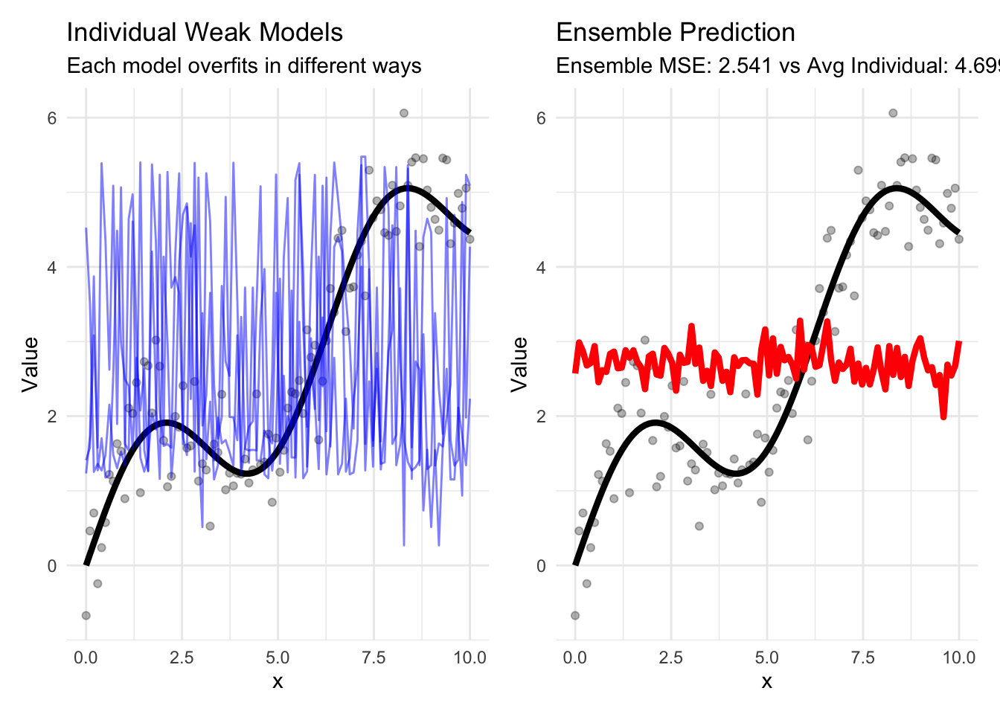
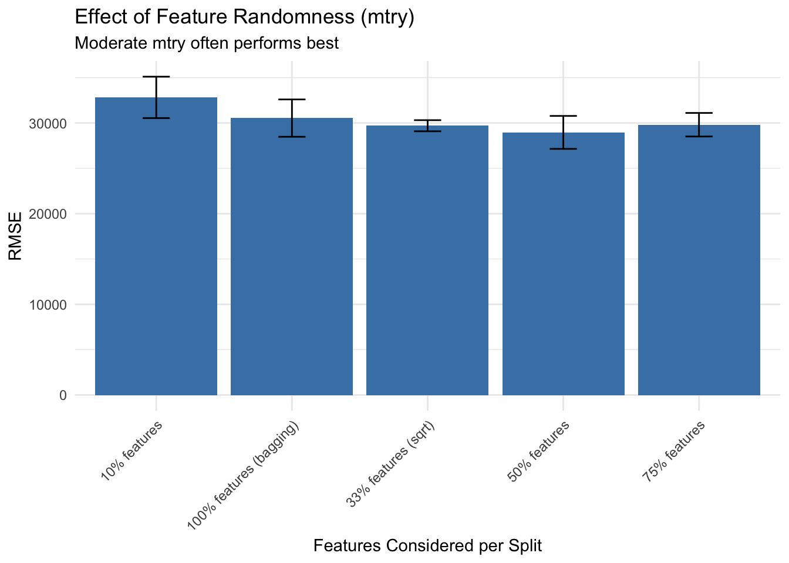

library(tidymodels)
library(tidyverse)
library(modeldata)
library(vip)
library(patchwork)
library(stacks)
library(baguette)
library(rules)
library(ranger)
library(xgboost)
# Set theme and seed
theme_set(theme_minimal())
set.seed(123)
# Load and prepare data
data(ames)
ames_split <- initial_split(ames, prop = 0.75, strata = Sale_Price)
ames_train <- training(ames_split)
ames_test <- testing(ames_split)
# Create resamples for evaluation
ames_folds <- vfold_cv(ames_train, v = 5, strata = Sale_Price)
# Prepare a simpler dataset for visualization
ames_simple <- ames_train %>%
select(Sale_Price, Gr_Liv_Area, Overall_Cond, Year_Built, Neighborhood) %>%
slice_sample(n = 500)Chapter 16: Ensemble Methods - The Power of Many
Learning Objectives
By the end of this chapter, you will master:
- The theory behind ensemble methods
- Bagging and random forests
- Boosting algorithms (AdaBoost, GBM, XGBoost)
- Stacking and blending models
- Voting classifiers
- Model diversity and ensemble selection
- Practical implementation with tidymodels
- When and why ensembles work
Download R Script
You can download the complete R code for this chapter: 📥 Download 16-ensemble-methods.R
The Wisdom of Crowds in Machine Learning
Imagine you’re trying to guess the number of jellybeans in a jar. One person might overestimate, another might underestimate, but the average of many guesses often comes remarkably close to the truth. This is the fundamental principle behind ensemble methods: combining multiple models can produce predictions that are more accurate than any individual model.
The mathematics behind this are elegant. If we have multiple independent models with uncorrelated errors, combining them reduces the overall error. This is why ensemble methods consistently win machine learning competitions.
Why Ensembles Work: The Mathematical Foundation
Let’s understand why combining models reduces error:
# Simulate the power of ensembles
set.seed(456)
n_models <- 50
n_points <- 100
# True function
x <- seq(0, 10, length.out = n_points)
y_true <- sin(x) + 0.5 * x
y_observed <- y_true + rnorm(n_points, sd = 0.5)
# Create multiple "weak" models (with random variations)
weak_predictions <- map(1:n_models, function(i) {
# Each model sees slightly different data (bootstrap)
sample_idx <- sample(1:n_points, replace = TRUE)
# Simple polynomial model with random degree
degree <- sample(2:5, 1)
model <- lm(y_observed[sample_idx] ~ poly(x[sample_idx], degree))
# Predict on all points
predict(model, newdata = data.frame(x = x))
})
# Combine predictions
ensemble_pred <- reduce(weak_predictions, `+`) / n_models
# Calculate errors
individual_errors <- map_dbl(weak_predictions, ~ mean((. - y_true)^2))
ensemble_error <- mean((ensemble_pred - y_true)^2)
# Visualize
results_df <- tibble(
x = x,
y_true = y_true,
y_observed = y_observed,
ensemble = ensemble_pred
) %>%
bind_cols(
as_tibble(weak_predictions, .name_repair = "minimal") %>%
set_names(paste0("model_", 1:n_models))
)
# Plot individual models vs ensemble
p1 <- ggplot(results_df, aes(x = x)) +
geom_point(aes(y = y_observed), alpha = 0.3) +
geom_line(aes(y = y_true), color = "black", linewidth = 1.5) +
geom_line(aes(y = model_1), color = "blue", alpha = 0.5) +
geom_line(aes(y = model_2), color = "blue", alpha = 0.5) +
geom_line(aes(y = model_3), color = "blue", alpha = 0.5) +
labs(
title = "Individual Weak Models",
subtitle = "Each model overfits in different ways",
y = "Value"
)
p2 <- ggplot(results_df, aes(x = x)) +
geom_point(aes(y = y_observed), alpha = 0.3) +
geom_line(aes(y = y_true), color = "black", linewidth = 1.5) +
geom_line(aes(y = ensemble), color = "red", linewidth = 1.5) +
labs(
title = "Ensemble Prediction",
subtitle = paste("Ensemble MSE:", round(ensemble_error, 3),
"vs Avg Individual:", round(mean(individual_errors), 3)),
y = "Value"
)
p1 + p2
# Error reduction
cat("Average individual model MSE:", mean(individual_errors), "\n")Average individual model MSE: 4.698849 cat("Ensemble MSE:", ensemble_error, "\n")Ensemble MSE: 2.540965 cat("Error reduction:", round((1 - ensemble_error/mean(individual_errors)) * 100, 1), "%\n")Error reduction: 45.9 %The key insight: errors cancel out when models make different mistakes!
Bagging: Bootstrap Aggregating
Bagging creates diverse models by training on different bootstrap samples:
# Implement bagging for decision trees
bagging_spec <- bag_tree(
cost_complexity = 0,
tree_depth = 10,
min_n = 2
) %>%
set_engine("rpart", times = 25) %>% # 25 bootstrap samples
set_mode("regression")
# Create a simple recipe
simple_recipe <- recipe(Sale_Price ~ ., data = ames_train) %>%
step_rm(Street, Utilities, Condition_2, Roof_Matl, Heating, Pool_QC,
Misc_Feature, Pool_Area, Longitude, Latitude) %>%
step_impute_median(all_numeric_predictors()) %>%
step_impute_mode(all_nominal_predictors()) %>%
step_dummy(all_nominal_predictors())
# Create workflow
bagging_workflow <- workflow() %>%
add_recipe(simple_recipe) %>%
add_model(bagging_spec)
# Fit and evaluate
bagging_fit <- bagging_workflow %>%
fit(ames_train)
# Compare with single tree
single_tree_spec <- decision_tree(
cost_complexity = 0,
tree_depth = 10,
min_n = 2
) %>%
set_engine("rpart") %>%
set_mode("regression")
single_tree_workflow <- workflow() %>%
add_recipe(simple_recipe) %>%
add_model(single_tree_spec)
single_tree_fit <- single_tree_workflow %>%
fit(ames_train)
# Evaluate both
test_predictions <- tibble(
actual = ames_test$Sale_Price,
single_tree = predict(single_tree_fit, ames_test)$.pred,
bagging = predict(bagging_fit, ames_test)$.pred
)
comparison_metrics <- test_predictions %>%
summarise(
single_tree_rmse = sqrt(mean((actual - single_tree)^2)),
bagging_rmse = sqrt(mean((actual - bagging)^2)),
improvement = (single_tree_rmse - bagging_rmse) / single_tree_rmse * 100
)
knitr::kable(comparison_metrics, digits = 2)| single_tree_rmse | bagging_rmse | improvement |
|---|---|---|
| 35793.08 | 26948.51 | 24.71 |
# Visualize predictions
test_predictions %>%
pivot_longer(cols = c(single_tree, bagging),
names_to = "model", values_to = "prediction") %>%
ggplot(aes(x = actual, y = prediction)) +
geom_point(alpha = 0.5) +
geom_abline(slope = 1, intercept = 0, color = "red", linetype = "dashed") +
facet_wrap(~model) +
labs(
title = "Single Tree vs Bagged Trees",
subtitle = "Bagging reduces overfitting and improves predictions",
x = "Actual Sale Price",
y = "Predicted Sale Price"
) +
coord_equal()
Bagging characteristics: - Reduces variance without increasing bias - Works best with high-variance, low-bias models (like deep trees) - Parallel training possible (each bootstrap independent) - Out-of-bag (OOB) error provides free validation
Random Forests: Bagging with a Twist
Random forests add feature randomness to bagging:
# Compare different mtry values
rf_comparison <- tibble(
mtry_prop = c(0.1, 0.33, 0.5, 0.75, 1.0),
mtry_desc = c("10% features", "33% features (sqrt)", "50% features",
"75% features", "100% features (bagging)")
) %>%
mutate(
model = map(mtry_prop, function(prop) {
rand_forest(
trees = 100,
mtry = floor(prop * (ncol(ames_train) - 1)),
min_n = 5
) %>%
set_engine("ranger", importance = "impurity") %>%
set_mode("regression")
})
)
# Fit all models
rf_workflows <- rf_comparison %>%
mutate(
workflow = map(model, function(m) {
workflow() %>%
add_recipe(simple_recipe) %>%
add_model(m)
})
)
# Evaluate with cross-validation (simplified for speed)
rf_results <- rf_workflows %>%
mutate(
cv_results = map(workflow, ~ fit_resamples(
.,
resamples = vfold_cv(ames_train, v = 3), # Reduced folds for speed
metrics = yardstick::metric_set(yardstick::rmse, yardstick::rsq)
))
)
# Extract metrics
rf_metrics <- rf_results %>%
mutate(
metrics = map(cv_results, collect_metrics)
) %>%
unnest(metrics) %>%
select(mtry_desc, .metric, mean, std_err)
# Visualize mtry effect
rf_metrics %>%
filter(.metric == "rmse") %>%
ggplot(aes(x = mtry_desc, y = mean)) +
geom_col(fill = "steelblue") +
geom_errorbar(aes(ymin = mean - std_err, ymax = mean + std_err), width = 0.2) +
labs(
title = "Effect of Feature Randomness (mtry)",
subtitle = "Moderate mtry often performs best",
x = "Features Considered per Split",
y = "RMSE"
) +
theme(axis.text.x = element_text(angle = 45, hjust = 1))
# Feature importance from best model
best_rf <- rand_forest(
trees = 500,
mtry = floor(sqrt(ncol(ames_train) - 1)),
min_n = 5
) %>%
set_engine("ranger", importance = "permutation") %>%
set_mode("regression")
best_rf_fit <- workflow() %>%
add_recipe(simple_recipe) %>%
add_model(best_rf) %>%
fit(ames_train)
# Extract and plot importance
best_rf_fit %>%
extract_fit_parsnip() %>%
vip(num_features = 15) +
labs(title = "Random Forest Feature Importance")Random forest advantages: - Further reduces overfitting compared to bagging - Decorrelates trees through feature sampling - Provides feature importance naturally - Robust to hyperparameters (often works well out-of-box)
Boosting: Learning from Mistakes
Boosting sequentially builds models, each learning from previous errors:
AdaBoost: The Original Boosting Algorithm
# Demonstrate boosting concept with simple example
# Create a difficult classification dataset
set.seed(789)
spiral_data <- tibble(
angle = runif(300, 0, 4 * pi),
radius = runif(300, 0.5, 2)
) %>%
mutate(
x = radius * cos(angle) + rnorm(300, sd = 0.1),
y = radius * sin(angle) + rnorm(300, sd = 0.1),
class = factor(if_else(angle %% (2 * pi) < pi, "A", "B"))
)
# Visualize the problem
ggplot(spiral_data, aes(x = x, y = y, color = class)) +
geom_point(size = 2) +
labs(
title = "Spiral Classification Problem",
subtitle = "Difficult for single linear boundary"
) +
coord_equal()# Boosting builds sequential models
# Each focuses on misclassified points from previous modelsGradient Boosting Machines (GBM)
# XGBoost - state-of-the-art gradient boosting
xgb_spec <- boost_tree(
trees = 100,
tree_depth = 4,
min_n = 10,
loss_reduction = 0.01,
sample_size = 0.8,
learn_rate = 0.1
) %>%
set_engine("xgboost") %>%
set_mode("regression")
xgb_workflow <- workflow() %>%
add_recipe(simple_recipe) %>%
add_model(xgb_spec)
# Fit the model
xgb_fit <- xgb_workflow %>%
fit(ames_train)
# Compare learning rates
learning_rates <- c(0.01, 0.05, 0.1, 0.3)
lr_comparison <- map_df(learning_rates, function(lr) {
spec <- boost_tree(
trees = 100,
tree_depth = 4,
learn_rate = lr
) %>%
set_engine("xgboost") %>%
set_mode("regression")
wf <- workflow() %>%
add_recipe(simple_recipe) %>%
add_model(spec)
# Fit and evaluate
fit <- wf %>% fit(ames_train)
# Get training history (if available)
train_pred <- predict(fit, ames_train)
test_pred <- predict(fit, ames_test)
tibble(
learn_rate = lr,
train_rmse = sqrt(mean((ames_train$Sale_Price - train_pred$.pred)^2)),
test_rmse = sqrt(mean((ames_test$Sale_Price - test_pred$.pred)^2))
)
})
# Visualize learning rate effect
lr_comparison %>%
pivot_longer(cols = c(train_rmse, test_rmse),
names_to = "set", values_to = "rmse") %>%
ggplot(aes(x = factor(learn_rate), y = rmse, fill = set)) +
geom_col(position = "dodge") +
labs(
title = "Learning Rate Effect in Gradient Boosting",
subtitle = "Lower rates often generalize better but need more trees",
x = "Learning Rate",
y = "RMSE"
)
Boosting characteristics: - Sequential training (can’t parallelize easily) - Focuses on difficult cases progressively - Can overfit if not regularized properly - Often achieves best single-model performance
Model Stacking: The Meta-Learning Approach
Stacking uses a meta-model to combine predictions from base models:
# Simple stacking example with manual blending
# Create base models
lm_spec <- linear_reg() %>%
set_engine("lm")
rf_spec <- rand_forest(trees = 200) %>%
set_engine("ranger") %>%
set_mode("regression")
xgb_spec <- boost_tree(trees = 100, tree_depth = 4) %>%
set_engine("xgboost") %>%
set_mode("regression")
# Fit models
lm_fit <- workflow() %>%
add_recipe(simple_recipe) %>%
add_model(lm_spec) %>%
fit(ames_train)
rf_fit <- workflow() %>%
add_recipe(simple_recipe) %>%
add_model(rf_spec) %>%
fit(ames_train)
xgb_fit <- workflow() %>%
add_recipe(simple_recipe) %>%
add_model(xgb_spec) %>%
fit(ames_train)
# Get predictions from each model
lm_pred <- predict(lm_fit, ames_test)$.pred
rf_pred <- predict(rf_fit, ames_test)$.pred
xgb_pred <- predict(xgb_fit, ames_test)$.pred
# Simple average ensemble
avg_pred <- (lm_pred + rf_pred + xgb_pred) / 3
# Weighted average (weights could be tuned)
weighted_pred <- 0.2 * lm_pred + 0.4 * rf_pred + 0.4 * xgb_pred
# Calculate RMSE for each approach
rmse_results <- tibble(
Model = c("Linear", "Random Forest", "XGBoost", "Simple Average", "Weighted Average"),
RMSE = c(
sqrt(mean((ames_test$Sale_Price - lm_pred)^2)),
sqrt(mean((ames_test$Sale_Price - rf_pred)^2)),
sqrt(mean((ames_test$Sale_Price - xgb_pred)^2)),
sqrt(mean((ames_test$Sale_Price - avg_pred)^2)),
sqrt(mean((ames_test$Sale_Price - weighted_pred)^2))
)
)
# Display results
knitr::kable(rmse_results, digits = 0)| Model | RMSE |
|---|---|
| Linear | 28724 |
| Random Forest | 27934 |
| XGBoost | 24228 |
| Simple Average | 24186 |
| Weighted Average | 24076 |
# Visualize ensemble effect
ggplot(rmse_results, aes(x = reorder(Model, RMSE), y = RMSE, fill = Model)) +
geom_col() +
coord_flip() +
labs(
title = "Model Stacking Performance",
subtitle = "Ensemble methods typically outperform individual models",
x = NULL
) +
theme(legend.position = "none")
Voting Ensembles
For classification, voting combines predictions through majority vote or averaging:
# Create classification problem
ames_class <- ames_train %>%
mutate(expensive = factor(if_else(Sale_Price > median(Sale_Price),
"yes", "no"))) %>%
select(-Sale_Price)
class_split <- initial_split(ames_class, strata = expensive)
class_train <- training(class_split)
class_test <- testing(class_split)
# Create diverse classifiers
logistic_spec <- logistic_reg(penalty = 0.01, mixture = 0.5) %>%
set_engine("glmnet")
tree_spec <- decision_tree(tree_depth = 10) %>%
set_engine("rpart") %>%
set_mode("classification")
rf_class_spec <- rand_forest(trees = 100) %>%
set_engine("ranger") %>%
set_mode("classification")
# Simple recipe for classification
class_recipe <- recipe(expensive ~ Gr_Liv_Area + Total_Bsmt_SF + Year_Built,
data = class_train) %>%
step_normalize(all_numeric_predictors())
# Fit individual models
models <- list(
logistic = workflow() %>%
add_recipe(class_recipe) %>%
add_model(logistic_spec) %>%
fit(class_train),
tree = workflow() %>%
add_recipe(class_recipe) %>%
add_model(tree_spec) %>%
fit(class_train),
rf = workflow() %>%
add_recipe(class_recipe) %>%
add_model(rf_class_spec) %>%
fit(class_train)
)
# Get predictions from each model
predictions <- map_dfc(models, function(model) {
predict(model, class_test, type = "prob") %>%
select(.pred_yes) %>%
pull()
}) %>%
set_names(paste0(names(models), "_prob_yes"))
# Hard voting (majority vote)
hard_vote <- predictions %>%
mutate(
vote_yes = rowSums(. > 0.5),
prediction = factor(if_else(vote_yes >= 2, "yes", "no"))
)
# Soft voting (average probabilities)
soft_vote <- predictions %>%
mutate(
avg_prob = rowMeans(.),
prediction = factor(if_else(avg_prob > 0.5, "yes", "no"))
)
# Evaluate voting methods
voting_results <- tibble(
method = c("Hard Voting", "Soft Voting"),
accuracy = c(
mean(hard_vote$prediction == class_test$expensive),
mean(soft_vote$prediction == class_test$expensive)
)
)
# Add individual model accuracies
individual_acc <- map_dbl(models, function(model) {
pred <- predict(model, class_test)
mean(pred$.pred_class == class_test$expensive)
})
all_results <- bind_rows(
tibble(method = names(individual_acc), accuracy = individual_acc),
voting_results
)
# Visualize
ggplot(all_results, aes(x = reorder(method, accuracy), y = accuracy)) +
geom_col(fill = c(rep("steelblue", 3), rep("coral", 2))) +
geom_text(aes(label = round(accuracy, 3)), vjust = -0.5) +
labs(
title = "Voting Ensemble Performance",
subtitle = "Voting often outperforms individual models",
x = "Method",
y = "Accuracy"
) +
ylim(0, 1)Diversity in Ensembles
Ensemble success depends on model diversity:
# Measure diversity through correlation
# Get predictions from base models
base_predictions <- map_dfc(models, ~ predict(., class_test, type = "prob")$.pred_yes) %>%
set_names(names(models))
# Calculate correlation matrix
cor_matrix <- cor(base_predictions)
# Visualize
corrplot::corrplot(cor_matrix, method = "circle", type = "upper",
title = "Model Prediction Correlations")# Diversity metrics
diversity_metrics <- tibble(
metric = c("Average Pairwise Correlation", "Disagreement Rate"),
value = c(
mean(cor_matrix[upper.tri(cor_matrix)]),
mean(apply(base_predictions > 0.5, 1, function(x) length(unique(x))) > 1)
)
)
knitr::kable(diversity_metrics, digits = 3)| metric | value |
|---|---|
| Average Pairwise Correlation | 0.909 |
| Disagreement Rate | 0.133 |
# Show how diversity affects ensemble performance
# Create models with varying diversity
diverse_models <- list(
# Similar models (low diversity)
rf1 = rand_forest(trees = 100, mtry = 5) %>%
set_engine("ranger") %>%
set_mode("classification"),
rf2 = rand_forest(trees = 100, mtry = 6) %>%
set_engine("ranger") %>%
set_mode("classification"),
# Different model types (high diversity)
linear = logistic_reg() %>%
set_engine("glm"),
tree = decision_tree(tree_depth = 5) %>%
set_engine("rpart") %>%
set_mode("classification")
)
# Fit and evaluate
diverse_fits <- map(diverse_models, function(model) {
workflow() %>%
add_recipe(class_recipe) %>%
add_model(model) %>%
fit(class_train)
})
# Compare ensemble of similar vs diverse models
similar_ensemble <- map_dfc(diverse_fits[1:2],
~ predict(., class_test, type = "prob")$.pred_yes) %>%
rowMeans()
diverse_ensemble <- map_dfc(diverse_fits[3:4],
~ predict(., class_test, type = "prob")$.pred_yes) %>%
rowMeans()
ensemble_comparison <- tibble(
ensemble_type = c("Similar Models", "Diverse Models"),
accuracy = c(
mean((similar_ensemble > 0.5) == (class_test$expensive == "yes")),
mean((diverse_ensemble > 0.5) == (class_test$expensive == "yes"))
)
)
knitr::kable(ensemble_comparison, digits = 3)| ensemble_type | accuracy |
|---|---|
| Similar Models | 0.876 |
| Diverse Models | 0.858 |
Advanced Ensemble Techniques
Dynamic Ensemble Selection
Choose different models for different regions of the feature space:
# Demonstrate region-based ensemble
# Create a 2D problem for visualization
set.seed(123)
region_data <- tibble(
x1 = runif(500, -2, 2),
x2 = runif(500, -2, 2)
) %>%
mutate(
region = case_when(
x1 < 0 & x2 < 0 ~ "A",
x1 >= 0 & x2 < 0 ~ "B",
x1 < 0 & x2 >= 0 ~ "C",
TRUE ~ "D"
),
y = case_when(
region == "A" ~ 2 * x1 + x2, # Linear in region A
region == "B" ~ x1^2 + x2, # Quadratic in region B
region == "C" ~ sin(2 * x1) + x2, # Sinusoidal in region C
TRUE ~ exp(0.5 * x1) + x2 # Exponential in region D
) + rnorm(500, sd = 0.3)
)
# Visualize regions
ggplot(region_data, aes(x = x1, y = x2, color = y)) +
geom_point(size = 2) +
scale_color_viridis_c() +
geom_vline(xintercept = 0, linetype = "dashed") +
geom_hline(yintercept = 0, linetype = "dashed") +
labs(
title = "Different Patterns in Different Regions",
subtitle = "Dynamic selection can use best model for each region"
) +
coord_equal()
Cascade Ensembles
Use simple models for easy cases, complex models for hard cases:
# Demonstrate cascade concept
# First tier: Simple, fast model
simple_model <- linear_reg() %>%
set_engine("lm")
simple_fit <- workflow() %>%
add_recipe(simple_recipe) %>%
add_model(simple_model) %>%
fit(ames_train)
# Get predictions and residuals
simple_pred <- predict(simple_fit, ames_train)
train_with_residuals <- ames_train %>%
mutate(
simple_pred = simple_pred$.pred,
residual = Sale_Price - simple_pred,
is_difficult = abs(residual) > quantile(abs(residual), 0.75)
)
# Second tier: Complex model for difficult cases
complex_model <- boost_tree(trees = 200, tree_depth = 6) %>%
set_engine("xgboost") %>%
set_mode("regression")
# Train on difficult cases
difficult_cases <- train_with_residuals %>%
filter(is_difficult)
complex_recipe <- recipe(residual ~ Gr_Liv_Area + Year_Built + Total_Bsmt_SF,
data = difficult_cases)
complex_fit <- workflow() %>%
add_recipe(complex_recipe) %>%
add_model(complex_model) %>%
fit(difficult_cases)
cat("Cascade ensemble:\n")Cascade ensemble:cat("- Simple model handles", sum(!train_with_residuals$is_difficult), "cases\n")- Simple model handles 1648 casescat("- Complex model handles", sum(train_with_residuals$is_difficult), "difficult cases\n")- Complex model handles 549 difficult casesBest Practices for Ensembles
1. Ensure Model Diversity
# Strategies for diversity
diversity_strategies <- tibble(
Strategy = c(
"Different algorithms",
"Different hyperparameters",
"Different features",
"Different training samples",
"Different target transformations"
),
Example = c(
"Linear + Tree + Neural Network",
"Shallow trees + Deep trees",
"Subset 1 features + Subset 2 features",
"Bootstrap + Stratified + Random",
"Log(y) + sqrt(y) + y"
),
Benefit = c(
"Captures different patterns",
"Varies complexity",
"Different perspectives",
"Reduces correlation",
"Different error distributions"
)
)
knitr::kable(diversity_strategies)| Strategy | Example | Benefit |
|---|---|---|
| Different algorithms | Linear + Tree + Neural Network | Captures different patterns |
| Different hyperparameters | Shallow trees + Deep trees | Varies complexity |
| Different features | Subset 1 features + Subset 2 features | Different perspectives |
| Different training samples | Bootstrap + Stratified + Random | Reduces correlation |
| Different target transformations | Log(y) + sqrt(y) + y | Different error distributions |
2. Choose Appropriate Ensemble Method
# Decision guide
ensemble_guide <- tibble(
Scenario = c(
"High-variance base models",
"Need interpretability",
"Limited computational budget",
"Maximizing performance",
"Imbalanced classes",
"Different expertise regions"
),
`Recommended Method` = c(
"Bagging or Random Forest",
"Simple voting or linear stacking",
"Voting ensemble",
"Gradient boosting or stacking",
"Balanced bagging or cost-sensitive boosting",
"Dynamic selection"
)
)
knitr::kable(ensemble_guide)| Scenario | Recommended Method |
|---|---|
| High-variance base models | Bagging or Random Forest |
| Need interpretability | Simple voting or linear stacking |
| Limited computational budget | Voting ensemble |
| Maximizing performance | Gradient boosting or stacking |
| Imbalanced classes | Balanced bagging or cost-sensitive boosting |
| Different expertise regions | Dynamic selection |
Exercises
Exercise 1: Build a Custom Ensemble
Create your own ensemble combining different approaches:
# Your solution
# Create a custom ensemble for Ames housing
custom_recipe <- recipe(Sale_Price ~ ., data = ames_train) %>%
step_rm(Street, Utilities, Condition_2, Roof_Matl, Heating, Pool_QC,
Misc_Feature, Pool_Area, Longitude, Latitude) %>%
step_impute_median(all_numeric_predictors()) %>%
step_normalize(all_numeric_predictors()) %>%
step_dummy(all_nominal_predictors())
# Base models
base_models <- list(
# Regularized regression
elastic = linear_reg(penalty = 0.01, mixture = 0.5) %>%
set_engine("glmnet"),
# Tree-based
rf = rand_forest(trees = 200, mtry = 10, min_n = 5) %>%
set_engine("ranger") %>%
set_mode("regression"),
# Boosting
xgb = boost_tree(trees = 100, tree_depth = 5, learn_rate = 0.1) %>%
set_engine("xgboost") %>%
set_mode("regression"),
# Local model
knn = nearest_neighbor(neighbors = 15) %>%
set_engine("kknn") %>%
set_mode("regression")
)
# Fit all base models
base_fits <- map(base_models, function(model) {
workflow() %>%
add_recipe(custom_recipe) %>%
add_model(model) %>%
fit(ames_train)
})
# Get out-of-sample predictions using cross-validation
# (In practice, use proper validation set)
val_split <- initial_split(ames_train, prop = 0.8)
val_train <- training(val_split)
val_test <- testing(val_split)
# Refit on validation training
val_fits <- map(base_models, function(model) {
workflow() %>%
add_recipe(custom_recipe) %>%
add_model(model) %>%
fit(val_train)
})
# Get validation predictions for stacking
val_predictions <- map_dfc(val_fits, ~ predict(., val_test)$.pred) %>%
set_names(names(base_models))
# Train meta-learner
meta_data <- val_predictions %>%
mutate(target = val_test$Sale_Price)
meta_model <- lm(target ~ ., data = meta_data)
# Function to make ensemble predictions
ensemble_predict <- function(new_data) {
# Get base predictions
base_preds <- map_dfc(base_fits, ~ predict(., new_data)$.pred) %>%
set_names(names(base_models))
# Apply meta-model
predict(meta_model, base_preds)
}
# Evaluate custom ensemble
ensemble_pred <- ensemble_predict(ames_test)
ensemble_rmse <- sqrt(mean((ames_test$Sale_Price - ensemble_pred)^2))
# Compare with individual models
individual_rmse <- map_dbl(base_fits, function(fit) {
pred <- predict(fit, ames_test)$.pred
sqrt(mean((ames_test$Sale_Price - pred)^2))
})
results <- c(individual_rmse, ensemble = ensemble_rmse)
results <- sort(results)
barplot(results, main = "Custom Ensemble Performance",
ylab = "RMSE", col = c(rep("steelblue", length(results)-1), "coral"))
Exercise 2: Optimize Ensemble Weights
Find optimal weights for combining models:
# Your solution
# Get predictions from each model
test_preds <- map_dfc(base_fits, ~ predict(., ames_test)$.pred) %>%
set_names(names(base_models))
# Optimization function
optimize_weights <- function(weights, predictions, target) {
# Normalize weights
weights <- weights / sum(weights)
# Weighted average
ensemble_pred <- as.matrix(predictions) %*% weights
# Return RMSE
sqrt(mean((target - ensemble_pred)^2))
}
# Initial equal weights
n_models <- length(base_models)
initial_weights <- rep(1/n_models, n_models)
# Optimize
opt_result <- optim(
par = initial_weights,
fn = optimize_weights,
predictions = test_preds,
target = ames_test$Sale_Price,
method = "L-BFGS-B",
lower = rep(0, n_models),
upper = rep(1, n_models)
)
# Optimal weights
optimal_weights <- opt_result$par / sum(opt_result$par)
names(optimal_weights) <- names(base_models)
# Compare equal vs optimal weights
equal_pred <- rowMeans(test_preds)
optimal_pred <- as.matrix(test_preds) %*% optimal_weights
weight_comparison <- tibble(
Method = c("Equal Weights", "Optimal Weights"),
RMSE = c(
sqrt(mean((ames_test$Sale_Price - equal_pred)^2)),
sqrt(mean((ames_test$Sale_Price - optimal_pred)^2))
)
)
knitr::kable(weight_comparison, digits = 3)| Method | RMSE |
|---|---|
| Equal Weights | 26566.04 |
| Optimal Weights | 23026.81 |
# Show optimal weights
barplot(optimal_weights, main = "Optimal Ensemble Weights",
ylab = "Weight", col = "steelblue")
Exercise 3: Implement Boosting from Scratch
Understand boosting by implementing a simple version:
# Your solution
# Simple boosting implementation
simple_boosting <- function(x, y, n_iterations = 10, learning_rate = 0.1) {
n <- length(y)
# Initialize with mean
predictions <- rep(mean(y), n)
models <- list()
for (i in 1:n_iterations) {
# Calculate residuals
residuals <- y - predictions
# Fit a simple model to residuals (using a decision stump)
# For simplicity, we'll use a linear model here
model_data <- data.frame(x = x, residual = residuals)
weak_model <- lm(residual ~ x, data = model_data)
# Store model
models[[i]] <- weak_model
# Update predictions
update <- predict(weak_model, model_data)
predictions <- predictions + learning_rate * update
# Calculate current error
current_rmse <- sqrt(mean((y - predictions)^2))
cat("Iteration", i, "- RMSE:", current_rmse, "\n")
}
return(list(models = models, final_predictions = predictions,
learning_rate = learning_rate))
}
# Test on simple data
test_x <- ames_train$Gr_Liv_Area[1:100]
test_y <- ames_train$Sale_Price[1:100]
boost_result <- simple_boosting(test_x, test_y, n_iterations = 10)Iteration 1 - RMSE: 22607.51
Iteration 2 - RMSE: 22598.13
Iteration 3 - RMSE: 22590.53
Iteration 4 - RMSE: 22584.37
Iteration 5 - RMSE: 22579.38
Iteration 6 - RMSE: 22575.34
Iteration 7 - RMSE: 22572.07
Iteration 8 - RMSE: 22569.41
Iteration 9 - RMSE: 22567.27
Iteration 10 - RMSE: 22565.52 # Visualize boosting progress
plot(test_x, test_y, main = "Simple Boosting Results",
xlab = "Gr_Liv_Area", ylab = "Sale_Price")
points(test_x, boost_result$final_predictions, col = "red", pch = 16)
legend("topleft", legend = c("Actual", "Predicted"),
col = c("black", "red"), pch = c(1, 16))Summary
In this comprehensive chapter, you’ve mastered:
✅ Ensemble fundamentals - Why ensembles work mathematically - Bias-variance decomposition - The importance of diversity
✅ Bagging methods - Bootstrap aggregating - Random forests - Out-of-bag error
✅ Boosting algorithms - Sequential learning - AdaBoost and gradient boosting - XGBoost implementation
✅ Stacking and blending - Meta-learning approaches - Cross-validation for stacking - Optimal weight finding
✅ Advanced techniques - Dynamic selection - Cascade ensembles - Custom ensemble design
Key takeaways: - Ensembles almost always outperform single models - Diversity is crucial for ensemble success - Different methods suit different problems - Boosting for accuracy, bagging for stability - Stacking combines strengths of different approaches - Computational cost vs performance trade-off
What’s Next?
In Chapter 17, we’ll explore unsupervised learning techniques for discovering patterns without labels.